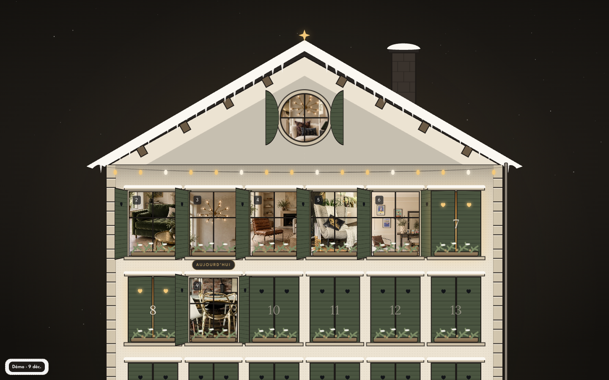
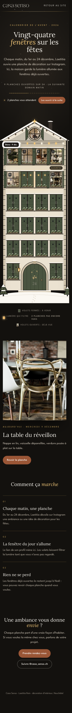
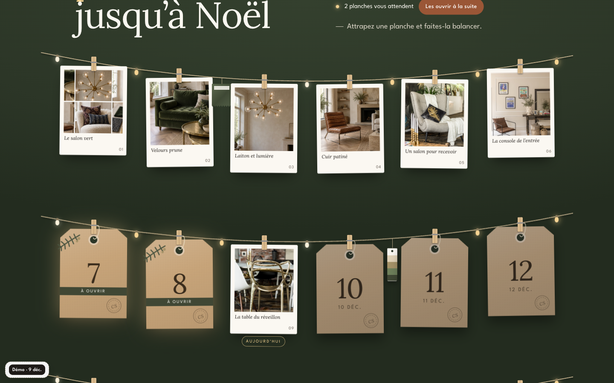
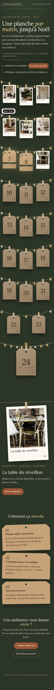

Maquette · 18.11.2026
Maquette · 18.11.2026
Calendrier de l’Avent : deux options pour le site
Chaque matin du 1er au 24 décembre, vous dévoilez une planche sur Instagram. Une page du site les rassemble : la case du jour s’éclaire, celles déjà ouvertes restent consultables, et chaque jour a son propre lien. Le fonctionnement est le même dans les deux options ; seul l’univers change.


Option A
La maison aux volets
La bâtisse dessinée du site, une nuit d’hiver. Chaque jour est une fenêtre aux volets verts ; le 24, c’est la porte, avec sa couronne.
- Les volets de la planche du jour laissent filtrer la lumière par leur cœur découpé.
- Au clic, ils s’ouvrent sur la planche dans une fine poussière dorée.
- Une nuit calme : quelques étoiles, une neige rare et lente, la maison posée dans un halo de lumière.
- Sous la maison, la planche du jour en grand, derrière ses volets, avec son titre et son texte.
- Le 24, quand tout est ouvert, la maison entière est éclairée.
Feutrée et précieuse, sans effets.
Voir l’option A


Option C
La guirlande d’atelier
Le mur d’inspiration de la décoratrice : les planches sont pendues à des fils lumineux par des pinces à linge, entre un échantillon de velours, un nuancier et un brin de sapin.
- Chaque jour est une étiquette kraft numérotée, marquée du tampon « cs ».
- Au clic, elle se retourne et la photo apparaît comme un instantané qui se révèle.
- On peut attraper une planche et la faire balancer ; elles bougent aussi en faisant défiler.
- Sous le mur, la planche du jour en grande étiquette, qu’on retourne d’un bouton.
- Le 24 est une grande étiquette seule sur son fil, avec une étoile.
Vivante et artisanale sans être brouillonne.
Voir l’option C
Ce qui est commun aux deux
- Avant le 1er décembre, la page annonce l’ouverture et compte les jours.
- Une case s’ouvre chaque matin. Celles du passé restent consultables ; celles pas encore regardées ressortent, et un bouton permet de les voir à la suite.
- Une fenêtre de lecture montre la planche, son titre et une phrase, avec un lien vers le post Instagram, un bouton de partage et l’accès aux autres jours.
- Sous chaque planche, une invitation discrète à prendre rendez-vous ; en bas de page, rendez-vous et Instagram.
- Chaque jour a son adresse directe (par exemple
/avent#jour-9) : la page s’ouvre sur la bonne case.
Le lien depuis Instagram
Instagram ne rend pas cliquables les liens écrits dans la légende d’un post. Le parcours qui fonctionne :
- le lien de la bio pointe vers la page du calendrier pendant tout le mois ;
- chaque jour, une story avec l’autocollant « lien » pointe directement sur la case du jour ;
- la légende du post peut dire « la planche reste sur le site, lien en bio ».
Ce qu’il nous faudra de votre part
Pour chacun des 24 jours :
- l’image de la planche (le même visuel que sur Instagram) ;
- un titre court et une phrase ;
- le lien du post une fois publié (sinon, le bouton mène à votre profil).
Les planches peuvent être ajoutées la veille ; la page n’affiche chaque case qu’à sa date.
Pour tester la maquette
En bas à gauche de chaque option, la barre « Démo » permet de changer la date (30 novembre, 9 décembre, 24 décembre) et de remettre les cases à neuf. Elle n’existera pas sur le site.
Les titres, textes et images des 24 jours sont des exemples tirés des photos du site, en attendant vos planches.